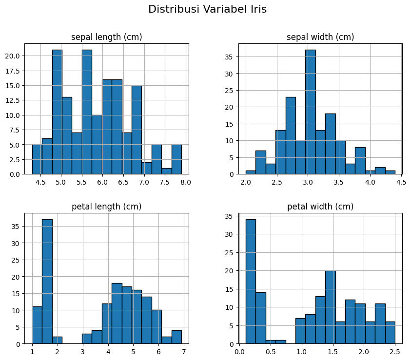

Describe Data Dataset Iris#
Pada bagian ini dilakukan analisis statistik deskriptif untuk memahami karakteristik numerik dari dataset Iris. Statistik deskriptif membantu melihat nilai rata-rata, minimum, maksimum, serta penyebaran data.
import pandas as pd
from sklearn.datasets import load_iris
iris = load_iris()
data = pd.DataFrame(iris.data, columns=iris.feature_names)
data['species'] = iris.target
data.head()
| sepal length (cm) | sepal width (cm) | petal length (cm) | petal width (cm) | species | |
|---|---|---|---|---|---|
| 0 | 5.1 | 3.5 | 1.4 | 0.2 | 0 |
| 1 | 4.9 | 3.0 | 1.4 | 0.2 | 0 |
| 2 | 4.7 | 3.2 | 1.3 | 0.2 | 0 |
| 3 | 4.6 | 3.1 | 1.5 | 0.2 | 0 |
| 4 | 5.0 | 3.6 | 1.4 | 0.2 | 0 |
Statistik Deskriptif#
Berikut adalah hasil statistik deskriptif dari dataset Iris:
import pandas as pd
from sklearn.datasets import load_iris
from scipy import stats
# Load dataset Iris
iris = load_iris()
data = pd.DataFrame(iris.data, columns=iris.feature_names)
# List untuk menyimpan ringkasan
summary_list = []
for col in iris.feature_names:
mean = round(data[col].mean(), 2)
median = round(data[col].median(), 2)
mode = stats.mode(data[col], keepdims=True).mode[0]
std = round(data[col].std(), 2)
min_val = data[col].min()
max_val = data[col].max()
var = round(data[col].var(), 2)
summary_list.append({
'Feature': col,
'Mean': mean,
'Median': median,
'Mode': mode,
'Std': std,
'Min': min_val,
'Max': max_val,
'Variance': var
})
# Ubah list menjadi DataFrame
summary = pd.DataFrame(summary_list)
summary
| Feature | Mean | Median | Mode | Std | Min | Max | Variance | |
|---|---|---|---|---|---|---|---|---|
| 0 | sepal length (cm) | 5.84 | 5.80 | 5.0 | 0.83 | 4.3 | 7.9 | 0.69 |
| 1 | sepal width (cm) | 3.06 | 3.00 | 3.0 | 0.44 | 2.0 | 4.4 | 0.19 |
| 2 | petal length (cm) | 3.76 | 4.35 | 1.4 | 1.77 | 1.0 | 6.9 | 3.12 |
| 3 | petal width (cm) | 1.20 | 1.30 | 0.2 | 0.76 | 0.1 | 2.5 | 0.58 |
Penjelasan:#
Mean menunjukkan rata-rata dari setiap variabel.
Min dan Max menunjukkan nilai terkecil dan terbesar.
Std (Standar Deviasi) menunjukkan tingkat penyebaran data.
Variabel petal length dan petal width memiliki variasi yang cukup besar dibandingkan sepal width.
Dari hasil ini dapat disimpulkan bahwa setiap variabel memiliki rentang nilai yang berbeda dan dapat digunakan untuk membedakan spesies bunga.
Pemeriksaan Missing Value#
Hasil menunjukkan bahwa tidak terdapat data yang kosong (missing value) pada dataset Iris, sehingga data siap untuk analisis lanjutan.
import matplotlib.pyplot as plt
data.drop(columns='species', errors='ignore').hist(figsize=(10,8), bins=15, edgecolor='black')
plt.suptitle('Distribusi Variabel Iris', fontsize=16)
plt.show()

Mengukur Distance Menggunakan Orange#
Untuk menghitung jarak antar data pada dataset IRIS, digunakan software Orange Data Mining. Proses ini bertujuan untuk mengetahui tingkat kemiripan atau perbedaan antar objek berdasarkan atribut numerik.
Langkah-langkah#
Buka aplikasi Orange
Tambahkan widget File
Pilih dataset bawaan iris
Tambahkan widget Distances
Hubungkan
File → DistancesPilih metode jarak (Euclidean, Manhattan, atau Cosine)
Hubungkan ke: Distance Map
Konsep Perhitungan Distance#
Euclidean Distance#
Manhattan Distance#
Cosine Similarity#
Cosine Distance#
Output Distance Matrix#
Widget Distances menghasilkan matriks jarak (distance matrix) yang berisi jarak antar setiap pasangan data.
Karakteristik matriks jarak:
Nilai kecil → data semakin mirip
Nilai besar → data semakin berbeda
Elemen diagonal selalu bernilai:
karena jarak suatu data terhadap dirinya sendiri adalah nol.
Interpretasi Hasil Distance#
Kemiripan Dalam Spesies#
Data dengan spesies yang sama (misalnya setosa) memiliki nilai jarak yang relatif kecil. Hal ini menunjukkan bahwa karakteristik bunga dalam satu spesies cenderung homogen.
Perbedaan Antar Spesies#
Data dari spesies berbeda (misalnya setosa dan virginica) memiliki nilai jarak yang lebih besar.
Atribut yang paling berkontribusi terhadap perbedaan tersebut adalah:
Petal Length
Petal Width
Karena kedua atribut ini memiliki variasi nilai yang signifikan antar spesies.
Visualisasi Distance Map#
Pada widget Distance Map:

Warna lebih gelap → jarak kecil (lebih mirip)
Warna lebih terang → jarak besar (lebih berbeda)
Biasanya terlihat blok gelap di sepanjang diagonal matriks yang menunjukkan adanya pengelompokan alami berdasarkan spesies.
Pengukuran Jarak pada Data Campuran#
Pada bagian ini dibuat contoh data campuran yang terdiri dari atribut numerik, ordinal, dan kategorikal. Metode yang digunakan adalah Gower Distance karena mampu menangani berbagai tipe atribut dalam satu perhitungan.
Contoh Data Campuran#
ID |
Umur (Numerik) |
IPK (Numerik) |
Semester (Ordinal) |
Jurusan (Kategorikal) |
|---|---|---|---|---|
M1 |
20 |
3.50 |
4 |
Informatika |
M2 |
22 |
3.80 |
6 |
Sistem Informasi |
M3 |
21 |
3.20 |
4 |
Informatika |
M4 |
23 |
3.60 |
8 |
Teknik Industri |
M5 |
19 |
3.00 |
2 |
Informatika |
M6 |
24 |
3.90 |
8 |
Sistem Informasi |
M7 |
20 |
3.40 |
4 |
Teknik Industri |
M8 |
22 |
3.70 |
6 |
Informatika |
M9 |
21 |
3.10 |
2 |
Sistem Informasi |
M10 |
23 |
3.85 |
8 |
Informatika |
Metode Pengukuran: Gower Distance#
Rumus umum Gower Distance:
Keterangan:
\(D_{ij}\) = jarak antara objek \(i\) dan \(j\)
\(p\) = jumlah atribut
\(s_{ijk}\) = skor jarak atribut ke-\(k\)
Perhitungan Setiap Tipe Atribut#
1. Atribut Numerik#
Untuk atribut numerik digunakan normalisasi:
Range dihitung dengan:
2. Atribut Ordinal#
Karena semester bersifat berurutan (2, 4, 6, 8), maka dihitung seperti numerik setelah dinormalisasi.
3. Atribut Kategorikal#
Untuk atribut kategorikal:
Contoh Perhitungan Jarak M1 dan M2#
Langkah 1: Hitung Range#
Umur:
IPK:
Semester:
Langkah 2: Hitung Selisih Ternormalisasi#
Umur:
IPK:
Semester:
Jurusan (Informatika vs Sistem Informasi):
Langkah 3: Hitung Gower Distance#
Interpretasi Hasil#
Rentang nilai Gower Distance:
Nilai mendekati 0 → objek sangat mirip
Nilai mendekati 1 → objek sangat berbeda
Nilai 0.515 menunjukkan bahwa M1 dan M2 memiliki tingkat perbedaan sedang.
Kesimpulan#
Gower Distance efektif digunakan pada data campuran karena mampu menggabungkan atribut numerik, ordinal, dan kategorikal dalam satu ukuran jarak terintegrasi.